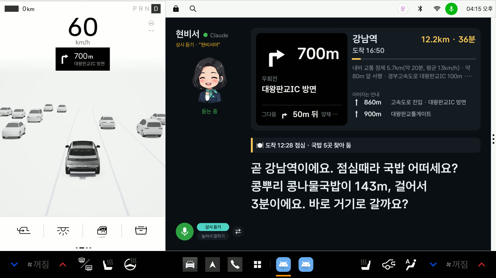
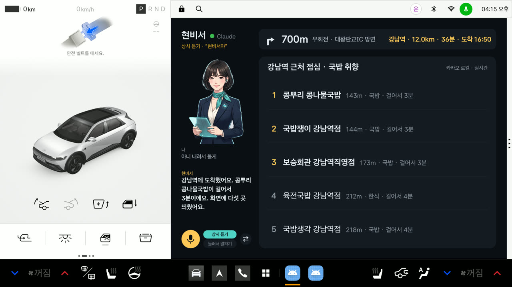
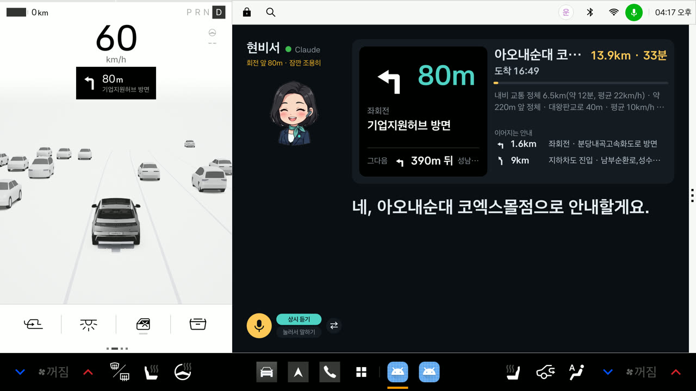

현비서 E2E 기록 · 20261108-1613
| 케이스 | 내용 | 판정 | 걸린 시간 | 응답(말→답) |
|---|---|---|---|---|
| e17 | 도착 추천 — 점심 시간 곧 도착 · 국밥 취향 · 내려서 카드 | 통과 4/4 | 103.6초 | 5.5s, 6.0s |
| e18 | 도착 추천 — 곧 도착 제안에 '응' → 그 식당으로 안내 | 통과 3/3 | 85.4초 | 11.8s |
통과 e17 · 도착 추천 — 점심 시간 곧 도착 · 국밥 취향 · 내려서 카드 영상 0:00
도착 시각 · 목적지 · 취향을 합쳐 묻기 전에 먼저: 곧 도착에 한마디 + 한 줄, 내리면 목적지 근처 식당 카드(카카오 로컬 실시간 · 서버가 만듦)
판정
- ✓ 카카오 실시간 검색(로그엔 검색어·개수만)
server: "places": "kakao\|near - ✓ 곧 도착 한 줄
log: arrive\|line\|.*점심 - ✓ 곧 도착 한마디
log: say\|P\d\|.*(점심|국밥) - ✓ 도착 카드 3~5곳
log: card\|.*근처.*\|[3-5]\|
실제 대화·동작
| -1:59 | 길 | nav cancel|demo|아오내순대 코엑스몰점 |
| -1:59 | 내비 | cancelled |
| 0:02 | 운전자 | 나 국밥 좋아해 |
| 0:06 | 현비서 P1 | 생각해 볼게요. |
| 0:08 | 두뇌 | 답 도착 · claude |
| 0:08 | 현비서 P1 | 국밥 좋아하시는군요, 기억해 둘게요. 비 오는 날엔 특히 생각나죠. 요즘 즐겨 듣는 음악은 있어요? |
| 0:15 | 길 | nav 강남역|37.49789810180664,127.02760314941406|est=14520m |
| 0:22 | 내비 | routeStarted RouteStartInfo(duration=2280, distance=13000, tollFare=700, name=강남역, remainDestinationChargingValue=75715) |
| 0:28 | 이벤트 | depart |
| 0:34 | 두뇌 | 답 도착 · claude |
| 0:34 | 현비서 P1 | 강남역까지 38분, 12시 28분 도착이에요. 양재 쪽 3.6km가 막혀서 20분쯤 더 걸려요, 내비 교통정보 기준이에요. |
| 0:40 | 이벤트 | near |
| 0:46 | 두뇌 | 답 도착 · claude · 카드 「강남역 근처 점심 · 국밥 취향」 |
| 0:46 | 카드 | 강남역 근처 점심 · 국밥 취향|5|kind=list|img=0|콩뿌리 콩나물국밥 — 143m · 국밥 · 걸어서 3분 / 국밥쟁이 강남역점 — 144m · 국밥 · 걸어서 3분 / 보승회관 강남역직영점 — 173m · 국밥 · 걸어서 3분 |
| 1:04 | 현비서 P1 | 곧 강남역이에요. 점심때라 국밥 어떠세요? 콩뿌리 콩나물국밥이 143m, 걸어서 3분이에요. 바로 거기로 갈까요? |
| 1:15 | 운전자 | 아니 내려서 볼게 |
| 1:18 | 현비서 P1 | 생각해 볼게요. |
| 1:20 | 두뇌 | 답 도착 · claude |
| 1:21 | 현비서 P1 | 네, 알겠어요. 내리면 화면에서 골라 보세요. |
| 1:27 | 이벤트 | arrived |
| 1:32 | 두뇌 | 답 도착 · claude · 카드 「강남역 근처 점심 · 국밥 취향」 |
| 1:32 | 카드 | 강남역 근처 점심 · 국밥 취향|5|kind=list|img=0|콩뿌리 콩나물국밥 — 143m · 국밥 · 걸어서 3분 / 국밥쟁이 강남역점 — 144m · 국밥 · 걸어서 3분 / 보승회관 강남역직영점 — 173m · 국밥 · 걸어서 3분 |
| 1:32 | 현비서 P1 | 강남역에 도착했어요. 콩뿌리 콩나물국밥이 걸어서 3분이에요. 화면에 다섯 곳 띄웠어요. |
화면


단계
- +0.1s {"do": "intent", "extras": "--ez cancel true"} — --ez cancel true
- +3.1s {"wait": "sec", "sec": 3}
- +3.2s {"do": "say", "text": "나 국밥 좋아해", "voice": false} — 글(마이크 없이) 「나 국밥 좋아해」
- +16.5s {"wait": "reply", "timeout": 40} — 답 도착
- +16.6s {"do": "intent", "extras": "--es clock 11:50"} — --es clock 11:50
- +16.7s {"do": "intent", "extras": "--es dest 강남역 --ef lat 37.4979 --ef lng 127.0276"} — --es dest 강남역 --ef lat 37.4979 --ef lng 127.0276
- +24.0s {"wait": "log", "pattern": "navi\\|routeStarted", "timeout": 40} — 확인
- +25.1s {"do": "vc", "args": ["gear", "Drive"]} — gear Drive
- +26.6s {"do": "vc", "args": ["speed", "60"]} — speed 60
- +29.4s {"wait": "log", "pattern": "event\\|depart", "timeout": 20, "from": "last"} — 확인
- +41.4s {"wait": "sec", "sec": 12}
- +41.6s {"do": "intent", "extras": "--es event near"} — --es event near
- +47.2s {"wait": "log", "pattern": "arrive\\|line\\|", "timeout": 60} — 확인
- +65.3s {"wait": "log", "pattern": "say\\|P\\d\\|.*갈까요", "timeout": 60, "from": "last"} — 확인
- +74.1s {"wait": "tts"}
- +75.8s {"shot": "주행 — 곧 도착 한마디 · 내비 판 아래 한 줄(점심 · 국밥)"} — 주행 — 곧 도착 한마디 · 내비 판 아래 한 줄(점심 · 국밥)
- +75.9s {"do": "say", "text": "아니 내려서 볼게", "voice": false} — 글(마이크 없이) 「아니 내려서 볼게」
- +85.9s {"wait": "reply", "timeout": 40} — 답 도착
- +87.1s {"do": "vc", "args": ["speed", "0"]} — speed 0
- +88.4s {"do": "vc", "args": ["gear", "Park"]} — gear Park
- +88.6s {"do": "intent", "extras": "--es event arrived"} — --es event arrived
- +88.6s {"wait": "log", "pattern": "card\\|.*근처", "timeout": 60} — 확인
- +100.3s {"wait": "tts"}
- +102.0s {"shot": "정차 — 도착 추천 카드(목적지 근처 국밥 5곳)"} — 정차 — 도착 추천 카드(목적지 근처 국밥 5곳)
- +102.1s {"do": "intent", "extras": "--es clock off"} — --es clock off
통과 e18 · 도착 추천 — 곧 도착 제안에 '응' → 그 식당으로 안내 영상 1:44
주행 중 고르기는 말 한마디로 — 두뇌가 [주변 장소] 1번 좌표를 nav로, 앱이 내비 목적지를 바꾼다(현비서 화면 지키기 포함)
판정
- ✓ 곧 도착에 1번 식당 제안(듣기)
log: say\|P\d\|.*갈까요 - ✓ 두뇌가 고른 식당을 nav로
server: "nav": \{"name": " - ✓ 고른 식당으로 경로
log: nav\|(?!코엑스)
실제 대화·동작
| 1:43 | 길 | nav 코엑스|37.511600494384766,127.05950164794922|est=14852m |
| 1:44 | 내비 | cancelled |
| 1:51 | 내비 | routeStarted RouteStartInfo(duration=2100, distance=14000, tollFare=0, name=코엑스, remainDestinationChargingValue=75519) |
| 1:57 | 이벤트 | depart |
| 2:02 | 두뇌 | 답 도착 · claude |
| 2:08 | 현비서 P1 | 코엑스까지 35분, 12시 55분 도착이에요. 판교로 쪽 5.9km가 막혀서 13분쯤 걸려요, 내비 교통정보 기준이에요. |
| 2:09 | 이벤트 | near |
| 2:14 | 두뇌 | 답 도착 · claude · 카드 「코엑스 근처 점심 · 국밥 취향」 |
| 2:14 | 카드 | 코엑스 근처 점심 · 국밥 취향|5|kind=list|img=0|아오내순대 코엑스몰점 — 156m · 국밥 · 걸어서 3분 / 이맛콩나물국밥 삼성동1점 — 239m · 국밥 · 걸어서 4분 / 일품돼지국밥 삼성역직영본점 — 311m · 국밥 · 걸어서 5분 |
| 2:38 | 현비서 P1 | 곧 코엑스예요. 점심때라 아오내순대 코엑스몰점이 목적지에서 156m, 걸어서 3분이에요. 바로 거기로 갈까요? |
| 2:47 | 운전자 | 응 거기로 가자 |
| 2:52 | 두뇌 | 답 도착 · claude |
| 2:52 | 길 | nav 아오내순대 코엑스몰점|37.5106,127.0583|est=14751m |
| 2:53 | 내비 | cancelled |
| 2:55 | 이벤트 | depart |
| 2:57 | 현비서 P1 | 어디 보자. |
| 2:59 | 현비서 P1 | 네, 아오내순대 코엑스몰점으로 안내할게요. |
| 3:00 | 내비 | routeStarted RouteStartInfo(duration=1980, distance=14000, tollFare=0, name=아오내순대 코엑스몰점, remainDestinationChargingValue=75550) |
| 3:01 | 두뇌 | 답 도착 · claude |
| 3:07 | 현비서 P1 | 아오내순대 코엑스몰점까지 30분, 12시 51분 도착이에요. 대왕판교로 쪽 5.9km가 막혀서 13분쯤 걸려요, 내비 교통정보 기준이에요. |
화면

단계
- +0.1s {"do": "intent", "extras": "--es clock 12:20"} — --es clock 12:20
- +0.2s {"do": "intent", "extras": "--es dest 코엑스 --ef lat 37.5116 --ef lng 127.0595"} — --es dest 코엑스 --ef lat 37.5116 --ef lng 127.0595
- +8.7s {"wait": "log", "pattern": "navi\\|routeStarted", "timeout": 40} — 확인
- +10.1s {"do": "vc", "args": ["gear", "Drive"]} — gear Drive
- +11.4s {"do": "vc", "args": ["speed", "60"]} — speed 60
- +13.8s {"wait": "log", "pattern": "event\\|depart", "timeout": 20, "from": "last"} — 확인
- +25.8s {"wait": "sec", "sec": 12}
- +26.0s {"do": "intent", "extras": "--es event near"} — --es event near
- +55.7s {"wait": "log", "pattern": "say\\|P\\d\\|.*갈까요", "timeout": 60} — 확인
- +64.1s {"wait": "tts"}
- +64.2s {"do": "say", "text": "응 거기로 가자", "voice": false} — 글(마이크 없이) 「응 거기로 가자」
- +69.4s {"wait": "log", "pattern": "^nav\\|(?!코엑스)", "timeout": 40} — 확인
- +77.1s {"wait": "log", "pattern": "navi\\|routeStarted", "timeout": 40, "from": "last"} — 확인
- +80.1s {"wait": "sec", "sec": 3}
- +81.6s {"shot": "식당으로 안내 — 내비 판 목적지가 바뀜"} — 식당으로 안내 — 내비 판 목적지가 바뀜
- +82.6s {"do": "vc", "args": ["speed", "0"]} — speed 0
- +83.8s {"do": "vc", "args": ["gear", "Park"]} — gear Park
- +83.9s {"do": "intent", "extras": "--es clock off"} — --es clock off